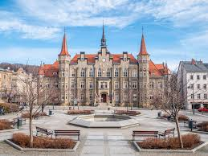

Dolnośląskie
Najważniejsze miasta
Wrocław
Wrocław, nazywany "miastem stu mostów", leży nad Odrą i słynie z pięknego Rynku oraz Ostrowa Tumskiego. Charakterystycznym elementem miasta są krasnale, których figurki można znaleźć w różnych zakątkach.
Rynek i Stare Miasto
Jeden z największych i najpiękniejszych rynków w Polsce, otoczony kolorowymi kamienicami. Na jego środku stoi gotycki Ratusz, a w pobliżu można spotkać słynne wrocławskie krasnale.Ostrów Tumski
Najstarsza część Wrocławia, pełna zabytkowych kościołów i klimatycznych latarni gazowych. To idealne miejsce na spacer i podziwianie gotyckiej architektury.Hala Stulecia i Pergola
Unikatowa budowla wpisana na listę UNESCO, otoczona ogrodami i fontanną multimedialną. Latem odbywają się tu widowiskowe pokazy światła i wody.Karpacz
Karpacz to popularny górski kurort u podnóża Śnieżki, najwyższego szczytu Karkonoszy. Jedną z największych atrakcji jest drewniana Świątynia Wang, przeniesiona tutaj z Norwegii.Świątynia Wang
XIII-wieczny drewniany kościół sprowadzony z Norwegii, będący unikalnym przykładem skandynawskiej architektury sakralnej. Znajduje się na malowniczym wzgórzu, skąd rozciąga się piękny widok na Karkonosze.Kolejka linowa na Kopę
Popularna atrakcja turystyczna, umożliwiająca szybkie dotarcie na szczyt i rozpoczęcie wędrówki na Śnieżkę. Z gondoli można podziwiać zapierające dech w piersiach krajobrazy.Muzeum Karkonoskie Tajemnice
Interaktywna ekspozycja poświęcona legendom i historii Karkonoszy. Zwiedzający mogą poznać postać Ducha Gór i inne lokalne mity.Wałbrzych
Wałbrzych to miasto otoczone górami, znane przede wszystkim z imponującego Zamku Książ. Dawniej był ważnym ośrodkiem górniczym, a dziś przyciąga turystów pięknymi krajobrazami i tajemnicami związanymi z historią regionu. Zamek Książ
Trzeci co do wielkości zamek w Polsce, otoczony malowniczymi tarasami i parkiem. Wnętrza pełne są historycznych sal, a pod zamkiem kryją się tajemnicze podziemia.Palmiarnia w Wałbrzychu
Unikalny ogród botaniczny z egzotycznymi roślinami i klimatycznymi alejkami. Wybudowana przez właścicieli Zamku Książ, jest jedną z najstarszych palmiarni w Polsce.Podziemne Miasto Osówka
Tajemniczy kompleks korytarzy i bunkrów z czasów II wojny światowej, będący częścią projektu Riese. Zwiedzanie z przewodnikiem pozwala odkryć mroczne sekrety III Rzeszy.